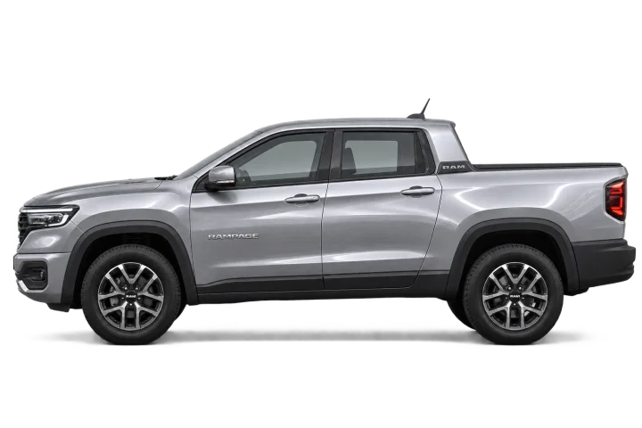
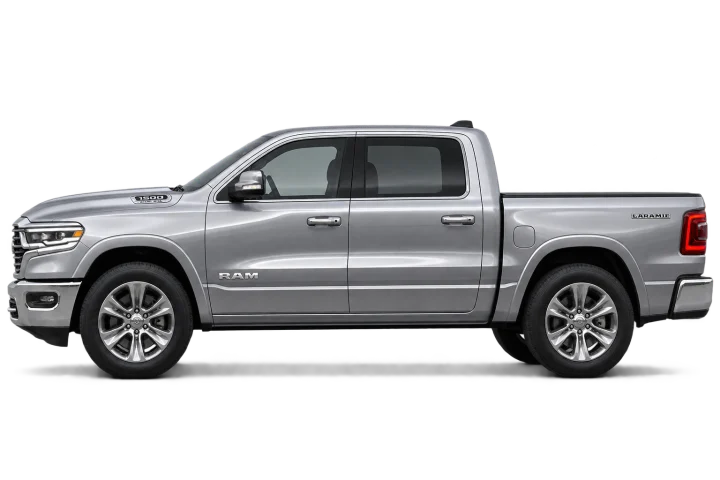
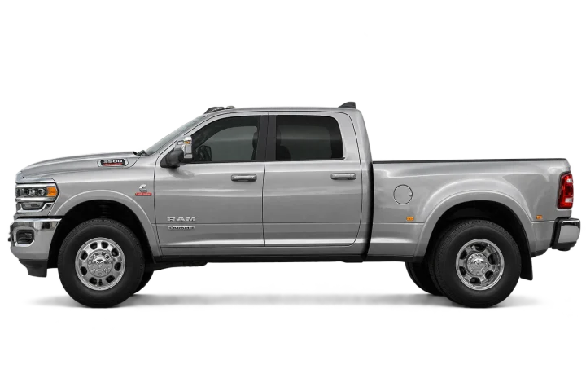
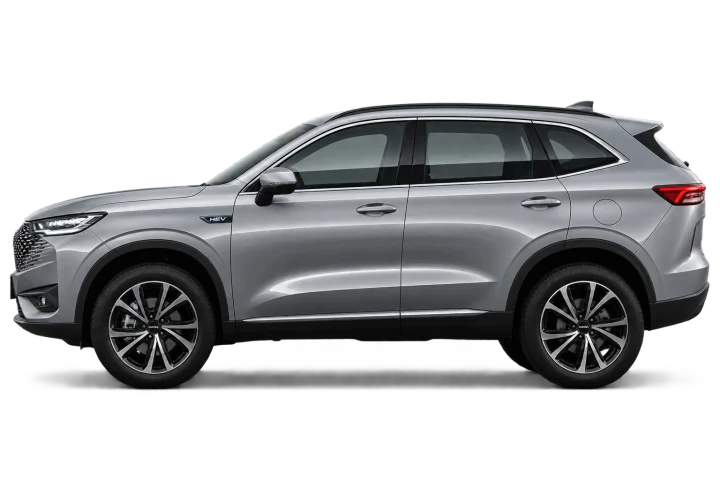

Blindagem
Antes de blindar: por onde começar?
Do primeiro contato à proposta: as informações que ajudam a planejar a blindagem do seu veículo.
Ler artigoMais de duas décadas dedicadas a proteger o que importa. Blindagem nível III-A, tecnologia e cuidado em cada detalhe do seu veículo.
A Hi-Tech faz parte dos programas de blindagem das montadoras. Escolha a marca e veja os modelos e os benefícios de cada programa.
 Compass
Compass Commander
CommanderA Hi-Tech integra a rede de blindadoras homologadas pela Jeep. Veículos novos e usados podem participar, após avaliação e conforme as regras do programa.

Rampage
1500 2500
2500
3500A Hi-Tech é uma das parceiras do programa de blindagem homologada RAM. Picapes novas e usadas passam por avaliação técnica e pelas condições de elegibilidade.

Haval H6A GWM inclui a Hi-Tech entre suas blindadoras parceiras. Consulte a configuração disponível para a versão e o ano do seu Haval H6.
Da escolha do projeto ao acompanhamento depois da entrega, reunimos tecnologia, experiência e cuidado para proteger você e o seu veículo.
em blindagem automotiva
em vidros e componentes balísticos
em vidros e componentes alterados nos programas Jeep, RAM e GWM*
com programa de blindagem que inclui a Hi-Tech
* Conforme as condições de cada programa. Consulte a elegibilidade do seu veículo.
Na Moóca, em São Paulo, reunimos tecnologia, profissionais e mais de 20 anos de experiência para cuidar de cada etapa da blindagem.
Conheça nossa estrutura
Do primeiro contato à proposta: as informações que ajudam a planejar a blindagem do seu veículo.
Ler artigoOrganize o histórico e as observações do veículo para aproveitar melhor o atendimento de assistência.
Ler artigoModelo, versão, materiais e cobertura: os pontos para esclarecer antes de escolher um projeto de blindagem.
Ler artigoProcura um veículo já blindado?
Conheça o Showroom